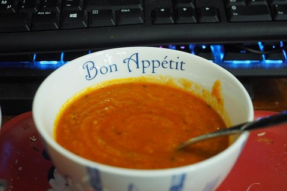
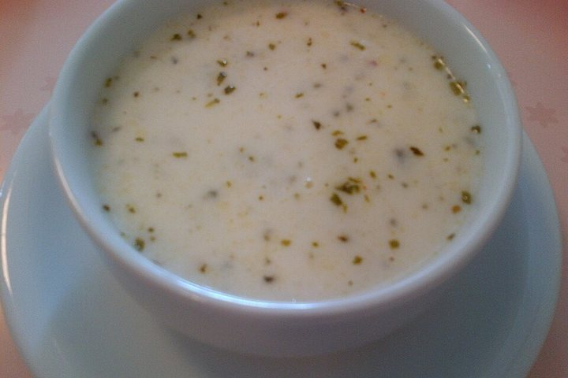
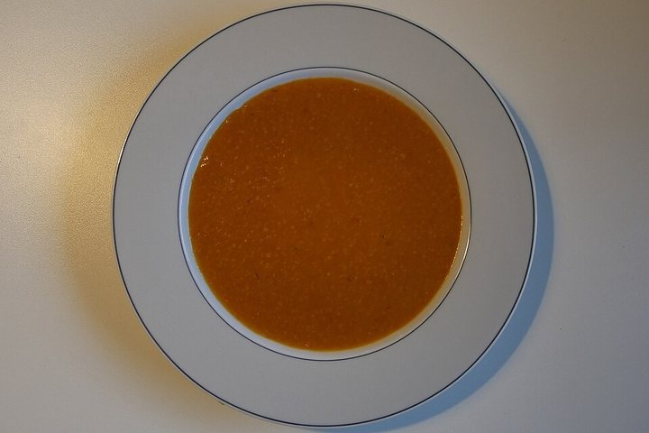
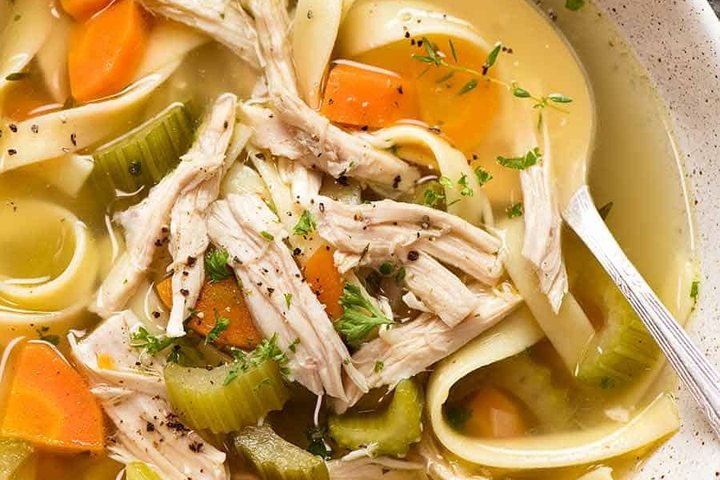

ÇorbalarSofraların vazgeçilmez başlangıcı! Pratik, besleyici ve içinizi ısıtacak 6 çorba tarifi. 
Mercimek Çorbası⏱ 40 dk👥 4 kişiKolay
Türk mutfağının en sevilen çorbası; besleyici, ekonomik ve pratik.
Malzemeler- 1 su bardağı kırmızı mercimek
- 1 soğan, 1 havuç
- 1 yemek kaşığı tereyağı
- 6 su bardağı su, tuz, karabiber
Yapılışı- Soğan ve havucu doğrayıp tereyağında kavurun.
- Yıkanmış mercimeği ve suyu ekleyin.
- Mercimekler dağılana kadar yaklaşık 30 dakika pişirin.
- Blenderdan geçirip tuz ve baharatını ekleyin.
💡 Servis ederken üzerine limon sıkın ve kızarmış ekmekle sunun.

Ezogelin Çorbası⏱ 45 dk👥 4 kişiKolay
Bulgur ve pirinçle zenginleşen, naneli bir Anadolu klasiği.
Malzemeler- 1 su bardağı kırmızı mercimek
- 2'şer yemek kaşığı bulgur ve pirinç
- 1 yemek kaşığı salça, 1 soğan
- Nane, pul biber, tuz
Yapılışı- Soğanı yağda kavurun, salçayı ekleyin.
- Mercimek, bulgur, pirinç ve suyu ilave edin.
- Kısık ateşte 35 dakika pişirin.
- Üzerine naneli yağ gezdirip servis yapın.
💡 Naneyi yağda çok az kızdırın; fazla kızarırsa acılaşır.

Domates Çorbası⏱ 25 dk👥 4 kişiKolay
Kremamsı kıvamıyla çocukların da çok sevdiği sıcacık bir çorba.
Malzemeler- 4 domates
- 2'şer yemek kaşığı un ve tereyağı
- 1 su bardağı süt, 4 su bardağı su
- Tuz, rendelenmiş kaşar
Yapılışı- Unu tereyağında kavurun.
- Rendelenmiş domatesleri ekleyip 5 dakika pişirin.
- Suyu ekleyin, kaynayınca sütü ilave edin.
- Üzerine kaşar serperek sıcak servis yapın.
💡 Sütü eklerken ateşi kısın; böylece süt kesilmez.

Yayla Çorbası⏱ 35 dk👥 4 kişiOrta
Yoğurt ve naneyle yapılan, mideye iyi gelen ferahlatıcı bir çorba.
Malzemeler- Yarım su bardağı pirinç
- 1,5 su bardağı yoğurt, 1 yumurta sarısı
- 1 yemek kaşığı un, 6 su bardağı su
- Tereyağı, kuru nane, tuz
Yapılışı- Pirinci suyla yumuşayana kadar haşlayın.
- Yoğurt, yumurta sarısı ve unu çırparak terbiyeyi hazırlayın.
- Terbiyeye sıcak çorbadan azar azar ekleyip tencereye dökün.
- Kaynayınca ocaktan alın, naneli tereyağı gezdirin.
💡 Terbiyeyi ılıştırmadan eklerseniz yoğurt keser.

Tarhana Çorbası⏱ 25 dk👥 4 kişiKolay
Anadolu'nun kış hazırlığı tarhanadan yapılan pratik bir çorba.
Malzemeler- 4 yemek kaşığı tarhana
- 1'er yemek kaşığı salça ve tereyağı
- 5 su bardağı su veya et suyu
- Tuz, pul biber
Yapılışı- Tarhanayı 1 su bardağı soğuk suda 10 dakika bekletin.
- Tereyağında salçayı kavurun, suyu ekleyin.
- Tarhanayı ekleyip karıştırarak 15 dakika pişirin.
- Pul biberli tereyağı ile servis yapın.
💡 Tarhanayı önceden suda bekletirseniz topaklanmaz.

Şehriyeli Tavuk Çorbası⏱ 50 dk👥 5 kişiKolay
Soğuk günlerde içinizi ısıtacak, sebzeli tavuk çorbası.
Malzemeler- 1 tavuk göğsü
- 1 havuç, 1 soğan
- Yarım su bardağı tel şehriye
- 6 su bardağı su, tuz, karabiber
Yapılışı- Tavuğu haşlayıp didikleyin, suyunu ayırın.
- Soğan ve havucu az yağda soteleyin.
- Tavuk suyu ve şehriyeyi ekleyip 10 dakika pişirin.
- Didiklenmiş tavuğu ekleyip bir taşım kaynatın.
💡 Üzerine limon sıkarsanız lezzeti ikiye katlanır.
| |